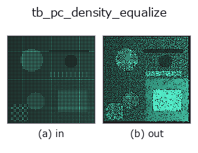

typed op• 数据种类:points → points
• 调用:fullseye.apply(img, "tb_pc_density_equalize", a=0.5, b=0.5)(2-D 的模型是一张图 + 两个标量旋钮 a,b∈[0,1])

*图为在 128×128 合成输入上实际运行的输出。左为输入，右为输出。点云以俯视散点显示(亮度 = z)，一维序列为折线，体数据为沿 z 的最大值投影，视频为中间帧，复数图像为幅值；无法成像的返回值直接显示数值。*
扫描旋钮 a(0.1 / 0.5 / 0.9，另一旋钮取默认):
▸ tb_pc_density_equalize: knob a sweep (docs site)
*旋钮 b 不改变输出(实测: 0.1 / 0.5 / 0.9 相同)。*
阶段(前置算子 → 本算子，从左到右):
▸ tb_pc_density_equalize: stages (docs site)
换别的图像(合成场景 / 照片 / 硬币。上排为输入，下排为对应输出。旋钮取默认):
▸ tb_pc_density_equalize: other inputs (docs site)
先填充稀疏区域,再稀疏化密集区域:实现均匀间距(`points`)。
> 以下的详细说明为原文 —— 摘要与标题已翻译。
:func:pc_fill_sparse followed by :func:pc_poisson_disk with radius
`0.8 × spacing` (the Poisson radius is a minimum, the k-NN spacing a
typical value; 0.8 keeps the median spacing at the target). Measured on a
cloud with a 6× density contrast: p95/p5 of spacing from 4.2 to ≤ 1.6.
Typed bridge of the 3d op `pc_density_equalize into the 2-D evolution registry: the same implementation, called under the op(v, a, b) convention. a drives k (default 8); b` is unused.
• 示例数据目录(下载 URL / 许可证) —— 2-D 用 skimage.data(BSD/公有领域)加合成图,3-D 给出真实数据源(Stanford/PDS 等)的下载 URL。
• 算子来历与参考文献 —— 该算子族所依据的研究/方法出处。
下面的程序已确认可以运行(与图相同的输入)。在 Studio 帮助中，此块会变成按钮，可当场加载并运行。
img_to_points 0.50 0.50 tb_pc_density_equalize 0.50 0.50
▸ Load this pipeline · Load & run
下面的示例调用的是底层账本算子 pc_density_equalize。此桥接算子只是把同一实现适配为 fn(v, a, b) 约定，行为完全相同(只是调用形式不同)。
• mesh_resolution_demo — py -3.11 examples_3d/mesh_resolution_demo.py
points 作为输入)identity · tb_points_to_voxel · tb_estimate_point_normals · tb_iss_keypoints · tb_angle_3points · tb_project_points · tb_render_point_depth · tb_statistical_outlier_removal
typed)tb_points_to_voxel · tb_estimate_point_normals · tb_iss_keypoints · tb_angle_3points · tb_project_points · tb_render_point_depth · tb_statistical_outlier_removal · tb_radius_outlier_removal
*Provenance: ops.py — 2D 算子登记表。本条目由 tools/opdocs.py md 自动生成(请勿手工编辑)。*
© 2026 Kazufumi Furuse — Fullseye operator documentation. Licensed under Apache-2.0.
{kind=link}
{kind=link}
{kind=link}